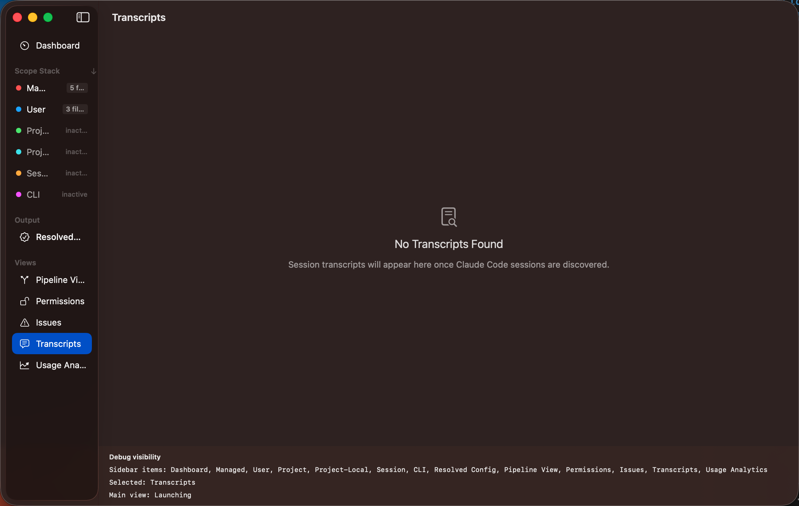

Transcripts
The Transcripts view lets you browse recorded Claude Code sessions. Each transcript shows the
full conversation between you and Claude, including tool calls and their results.

Transcript Header
Every transcript displays key metadata:
- Session ID — unique identifier for the session
- Model — which Claude model was used
- Turn count — total conversation turns
- Token count — total input + output tokens consumed
- Estimated cost — approximate USD cost based on token usage
- Date — when the session occurred
Browsing and Searching
Transcripts display in a chat-style layout. For long sessions, turns load incrementally
(100 at a time) to keep the interface responsive.
The toolbar provides:
- Full-text search — find specific content within a transcript, with match
navigation (previous/next) and highlighted results
- Jump to turn — enter a turn number to scroll directly to it
- Export — save the transcript as JSON or plain text
Data Source
Transcripts are read from local .jsonl files stored by Claude Code. No network
access is required — all data stays on your machine.